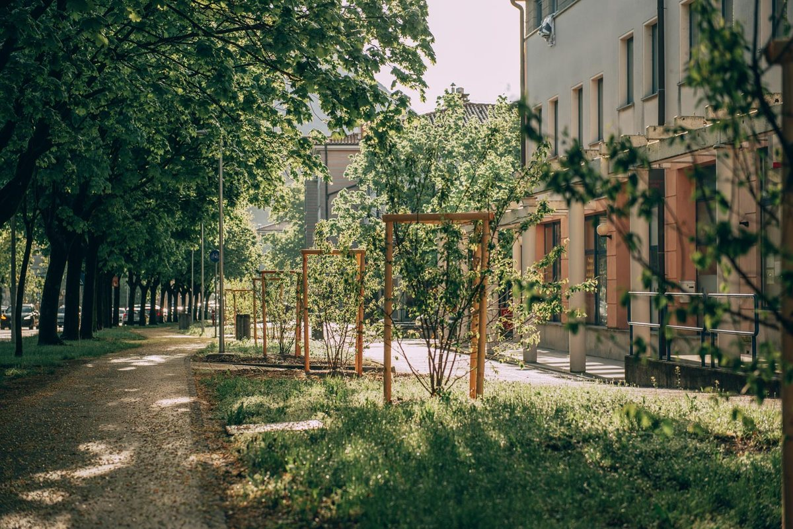

javni prostor
Bolj zeleno mesto
Ajdovščina je postala mesto, ki diha z zelenimi pljuči narave. Okrasne trave se mehko zibljejo v burji, nad njimi lipe in javorji, vmes grmovnice in trajnice.
- Kraj
- Ajdovščina
- Leto
- 2022–2023
- Obseg
- 1.200 dreves, 700 grmovnic, okoli 28.000 trajnic
- Vodja
- Tina Lipovž